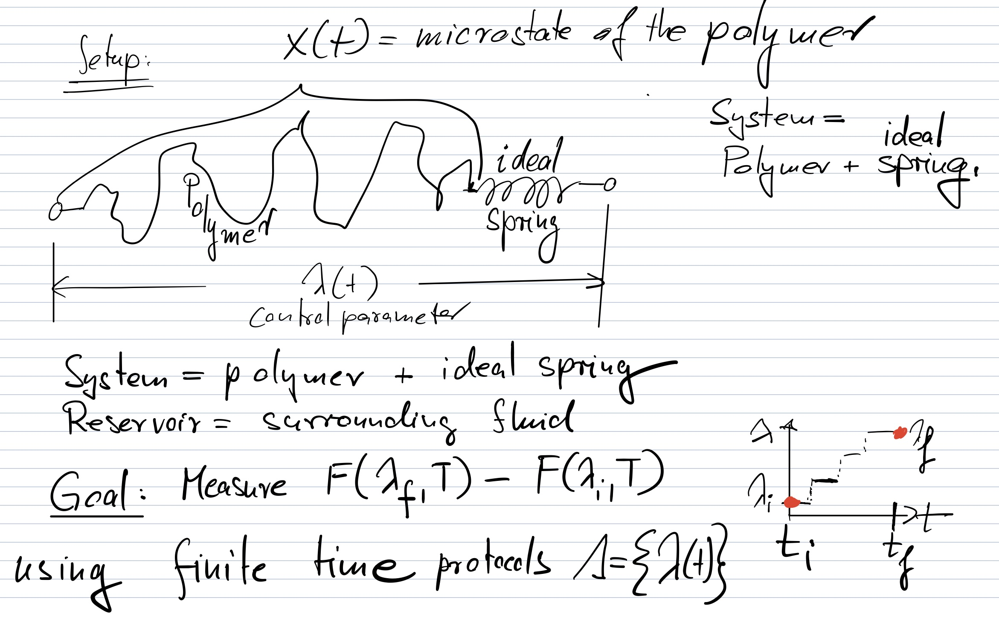

Non-equilibrium fluctuation theorems#
Statistical physics is a powerful framework to deduce general statements about the dynamics at or near equilibrium. However, for a long time, it was believed that no general statements can be made about far from equilibrium dynamics. This changed in the early 2000s with the discovery of non-equilibrium fluctuation theorems. We discuss the two best-known theorems, the Crooks and Jarzynski theorems.
We have seen: In the thermodynamic limit, the work done on a system during an isothermal process always exceeds the change in free energy, \(W\geq\Delta F.\)
Jarzynski showed that this statement can be generalized to the equality
To interpret this equation, we need to clarify the transformation process: Consider a system with an external control parameter, \(\lambda\), such as the volume of a container or the length of a polymer. We assume at time \(0\), the system is equilibrated with \(\lambda=\lambda_i\). Then the system is driven out of equilbrium following a particular finite time protocol \(\Lambda=\{\lambda(t)\}\) until the final value \(\lambda(T)=\lambda_f\) is reached. The total work \(W\) done on the system during this process will be a random variable. It is different each time we rerun this process. The average on the left hand side is an average over many realizations of the above transformation.
The free energy difference \(\Delta F\) on the right hand side is the difference between the free energy of the system for the initial and final parameters, i.e.,
Note that if the transformation protocol \(\Lambda\) is short, the system will go through a dynamics very far from equilibrium and be at a state far from equilibrium at time \(T\). Yet, the Jarzynski equation relates the ensuing work to the equilibrium quantity \(\Delta F\), which is why this equation was so surprising.
In the original publication, Jarzynksi derived his equation from Hamiltonian dynamics. We will take a different route, and show that the coarse-grained stochastic dynamics of a microscopically reversible equations of motions satisfies Crook’s theorem, from which the Jarzynski theorem follows easily.
Time reversibility#
The crux of the Crooks theorem is that microscopic laws are time reversible. In a stochastic description of the dynamcis, this implies that, in equilibrium, \(A \rightarrow B\) occur at the same rate as \(B \rightarrow A\) transitions. Or in terms of probabilities, we must have the detailed balance condition,
implying
or
where we used the fact that, in equilibrium, the likelihood ratio of two states is given by the boltzmann factor. As we transform the system from one state to the other, the energy change is generated by a combination of heat from the reservoir into the system and work done by an external force.
A concrete setup#
To be specific, let’s imagine the system consists of a polymer connected to an ideal spin. \(x(t)\) represents the (high-dimensional) configuration of the polymer and \(\lambda(t)\) is the end-to-end distance from the open ends of polymer and spring. The reservoir is the surrounding fluid.
Suppose we are interested in stretching the polymer from initial length \(\lambda_i\) to final length \(\lambda_f\) in the finite time \(T\). Our goal is to measure \(\Delta F=F(\lambda_f, T)-F(\lambda_i,T)\).
{kind=link}
Let’s assume we discretize our stochastic dynamics into \(N\) time steps and let the control parameter jump change discontinuously at the end of each time step (see bottom right in figure).
It is clear that, if our time steps are sufficiently small, we should be able to discretize the \(\lambda(t)\) dynamics into such a piecewise constant function. The advantage of this discretization is twofold:
(1) it ensures that the external force does not perform any work in the time intervals between \(t\) and \(t+1\) where \(\lambda(t)=\lambda_{t,t+1}=\) const.
Thus,
where \(Q_{t, 1+1}\) is the heat added to the system in the time interval \((t, t+1)\). The equality follows from equation (5) and \(W=0\).
(2) During the instantaneous jumps in \(\lambda(t)\), we can assume that the configuration \(x\) of the polymer does not change - only the ideal, massless spring gets stretched. Thus, the configuration before and after the jump are identical, \(x^+_t=x^-_t \forall t\).
Generalizing (6), we thus obtain
where
Now, we integrate over the equilibrium distribution of the initial conditions for the forward path and the final conditions for the backward path.
Imposing the Boltzmann distribution,
where \(E_i=E(x_i,\lambda_i)\) and \(F_i=F(\lambda_i,T)\), we obtain
Crooks Fluctuation Theorem (CFT) (2000):#
Jarzynski (1998):#
From the Crooks theorem, we get the Jarzynski equation easily
Jensens inequality \(\left\langle e^{-x}\right\rangle \geqslant e^{-\langle x\rangle}\) then implies
a version of the second law.
Testing the Crooks fluctuation theorem#
In 2005, Bustamante’s group at Berkeley published a test of the CFT. They repeatedly unfolded and refolded a RNA hairpin and determined the work distributions for Unfolding, \(P_U(W)\), and for refoldung, \(P_R(-W)\). These two distributions deviate from one another, the more so the more rapid the unfolding protocal is, i.e., the more it is out of equilibrium. Yet, if the CFT is correct, both distributions have to cross at exactly \(W=\Delta F\), since \(P_U(\Delta F)=P_R(-\Delta F)\). Indeed, that’s what they found.